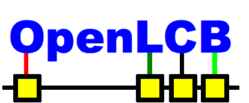

OpenLCB
Arduino Prototype Sketches
This directory contains various Arduino sketches for MRRLCB R&D.
When you add one, please leave a brief note below.
- OlcbBasicNode: (Bob Jacobsen)
-
Basic 4-pin node with configuration, etc.
Analog 0, 1 are input pins that drive producers
Analog 2, 3 are output pins on consumers
- OlcbEightConsumer: (Bob Jacobsen)
-
Basic 8-pin output node with configuration, etc.
Analog 0-4 and digital 6-9 are output pins on consumers
- OlcbServoNode (Bob Jacobsen)
-
OpenLCB node with three event slots
for driving a servo on pin 9.
- CAN2USBuino: (Alex Shepherd)
-
Use a LEDuino as a CAN-USB adapter.
Uses GridConnect format (e.g. ":S65N01;")
Good starting example of CAN receive
- CAN2EtherNetuino: (Bob Jacobsen)
-
A CAN-Ethernet bridge for the LEDuino. Just forwards
frames, not a full OpenLCB router.
Status of projects below here is not certain:
- OlcbDisplay (Bob Jacobsen)
-
OpenLCB node for development of OpenLCB display protocol.
Drives attached LCD display (20x4 on the development board)
- OlcbBasicNode: (Bob Jacobsen)
-
Development sketch for configuration code,
often in flux. Not recommended for general use.
Analog 0, 1 are input pins that drive producers
Analog 2, 3 are output pins on consumers
- CAN2USBuinoDPH2090329: (David Harris)
-
Private experiment by dph
- CAN2USBuinoDPH2090329_2: (David Harris)
-
Private experiment by dph
- CAN2USBuinoFilters: (David Harris)
-
Private experiment by dph
- CAN2USBuinoLEDPWM: (David Harris)
-
Receives CAN messages with id=0x65.
Drives a LED on pin LED_PIN with PWM (brightness) dependant
on the first data byte.
Works with CAN2USBuinoRamp.
- CAN2USBuinoRamp: (David Harris)
-
Continually send CAN packets with id=0x65 in the header
and 0 to 100 in the data, waiting 100msec in between.
Works with CAN2USBuinoLEDPWM.
- MrrLcbCanLocoNet
-
LocoNet adapter work by Alex Shepherd
*.pde files are the primary source for a Arduino sketch. As such, they
should have some SVN properties set. You can either include these in
your .subversion configuration to get them set by default, or explicitly
set them when you create a new sketch:
svn propset svn:eol-style native *.pde
svn propset svn:keywords "Id Revision" *.pde
rm -rf /applet
svn rm /applet (only if needed)
svn propset svn:ignore applet
This web sites contains trademarks and
copyrighted information. Please see the Licensing
page.
This is SVN $Revision$ of 08/16/09.